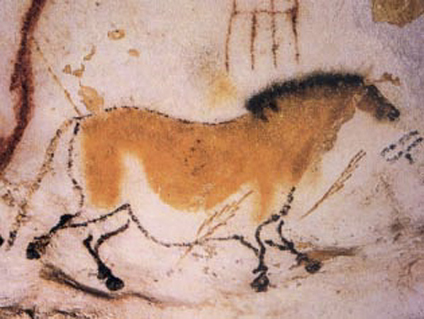
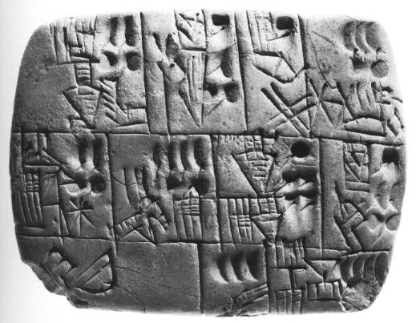
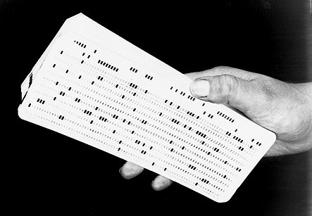

Что такое ПК?
Устройство или система, способная выполнять заданную последовательность
операций.
Это чаще всего операции численных расчётов и манипулирования данными.

Однако сюда относятся и операции ввода-вывода.
Описание последовательности операций называется программой
История ПК
Потребность считать возникала у людей вместе с появлением цивилизации.
Для этого издревле были изобретены инструменты.
Счётные палочки и абака, в ходе развития науки эволюционировавшие
в вычислительные устройства -
персональные компьютеры.

Развитие ПК
В короткой истории компьютерной техники выделяют несколько периодов.
Временное деление на периоды в определенной степени условно.
Так как когда еще выпускались компьютеры старого поколения,
новое поколение начинало набирать
обороты.
Можно выделить общие тенденции развития компьютеров:
1.Увеличение количества элементов на единицу площади.
2.Уменьшение размеров.
3.Увеличение скорости работы.
4.Снижение стоимости.
5.Развитие программных средств, с одной стороны, и упрощение,
стандартизация аппаратных – с другой.
Развитие носителей информации
Давайте же сначала разберёмся, что такое носитель информации
Носитель информации - это любое устройство предназначенное
для записи и хранения информации.
Примерами носителей могут быть и бумага, или USB-Flash
память, также как и глиняная табличка или
человеческая ДНК.
Первыми носителями информации были, по всей видимости, стены пещер.
Глиняные таблички - 7-й век до нашей эры
На глиняных табличках писали пока глина была сырой, а затем обжигали в печи.
Потом были восковые таблички, папирус, пергамент, бумага, береста.
И наконец в 1804 году благодаря Герману Холлериту
появляется носитель информации отдалённо похожий
на нынешние
Это была - первая перфокарта
И после этого, как говориться, пошло-поехало
Перфоленты - 1846 год
Магнитные ленты, затем магнитные диски - 50-е
Гибкий диск (дискета) - 1969 год
И наконец, история развития подходит к концу
Жёсткий диск - Жесткий диск изобретен в 1956 году, но продолжает
использоваться и постоянно
совершенствоваться.
Далее идёт compact-disk, последним звеном является flash память